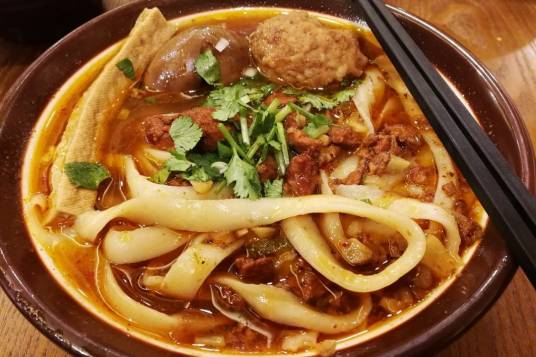

山西刀削面
山西刀削面（Shanxi sliced noodles）是山西省的一种特色传统面食，因其风味独特，驰名中外；据传山西刀削面是唐朝驸马柴绍发明，刀削面全凭刀削，因此得名。用刀削出的面叶，中厚边薄。棱锋分明，形似柳叶。
入口外滑内筋，软而不粘，越嚼越香，刀削面的调料（俗称“浇头”或“调和”），也是多种多样的，有番茄酱、肉炸酱、羊肉汤、金针木耳鸡蛋打卤等，都深受喜食面食者欢迎。它同武汉热干面、北京炸酱面、河南烩面、四川担担面同称为五大面食名品，享有盛誉。
俗话说：世界面食在中国，中国面食在山西。山西的刀削面鼎鼎有名。
历史起源
相传，刀削面为唐朝驸马柴绍所创，因其常年征战沙场，没有合适的厨房工具，所以想起用刀来削面，一直流传至今。提到山西，煤、醋、面可以说是山西名片的代表，而刀削面是山西面食文化的招牌，有数百年的历史。
“世界面食在中国，中国面食在山西，山西不愧为面食之乡。”这是日本友人明星食品株式会社长卜厚昌先生考察山西面食后说的一句赞誉。自古以来，山西面食就以品种多样和养生健身而著称于世。山西面食历史悠久，源远流长，有据可考已有2000多年的历史。
无论是电影、电视剧还是书籍中，只要提到和山西有关的故事，镜头中总会出现“技艺娴熟的师傅，和好的面团顶在头部，两只手中分别拿一把削面刀，在头顶上“嗖嗖”奤奤面挥动。“飞刀削面”在山西已成为一种表演艺术，这样的镜头曾出2010年举办的上海世博会中。
太原全晋会馆的飞刀削面就有三绝：快，每分钟能削出200根以上，令人眼花缭乱；准，1.5米外放个玉盘，削面根根入内；奇，表演者头顶面团双手舞削，更有脚踏在独轮车之上表演，惊险壮观。在这场举世瞩目历时184天的盛会中，山西面食师傅为海内外游客展示着中国面食的独特魅力。所以，人们说：“吃刀削面是饱口福，看刀削面是饱眼福”。
刀削面对和面的技术要求较严，水、面的比例，要求准确，一般是一斤面三两水，打成面穗，再揉成面团，然后用湿布蒙住，饧半小时后再揉，直到揉匀、揉软、揉光。如果揉面功夫不到，削时容易粘刀、断条。刀削面之妙妙在刀功。刀，一般不使用莱刀，要从特制的弧形削刀。操作时左手托住揉好的面团，右手持刀，手腕要灵，出力要平，用力要匀，对着汤锅，嚓、嚓、嚓，一刀赶一刀，削出的面叶儿，一叶连一叶，恰似流星赶月，在空中划出一道弧形白线，面叶落入汤锅，汤滚面翻，又象银鱼戏水，煞是好看。
高明的厨师，每分钟能削二百刀左右，每个面叶的长度，恰好都是六寸。吃面前，能够参观厨师削面，无异于欣赏一次艺术表演。
刀削面的调料（俗称“浇头”或“调和”），也是多种多样的，有番茄酱、肉炸酱、羊肉场、金针木耳鸡蛋打卤等，并配上应时鲜菜，如黄瓜丝、韭菜花、绿豆芽、煮黄豆、青蒜末、辣椒面等，再滴上点老陈醋，十分可口。
所获荣誉
2013年6月入选“中国十大名面”。
2018年中国饭店协会授予大同“中国刀削面之乡”。
2020年入选大同市”非物质文化遗产保护项目”。2022年6月，入选“十大山西面食”。